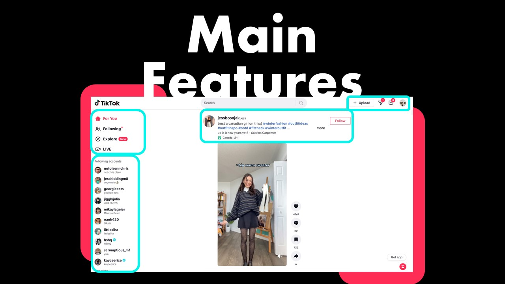

TikTok
User interface Home Page:
On TikTok the video is put in focus by placing it in the middle of the Page, everything else is pushed to the edges. All interaction Buttons (follow, like, comment, share, sound) are lined up on the right side of the video, making it very easy to to interact with.
Advantages:TikTok's algorithm can understand what content keeps the user engaged and it's easy to find other people on a trend and and join the trend
Navigation buttons (Home, Friends, Inbox, Profile) are on the left side for quick navigation through the apps different pages without taking up too much space.
GET:
This method is used to retrieve data. In this scenario, TikTok needs to fetch information when trying to access user profiles, their videos and comments. One of the main features is the so called ‘’For You Page’’, where the GET method is used to fetch trending content and all of the content that belongs to it, to put it in an infinite list of videos playing one after another. Of course, for each video, new data needs to be fetched.
POST:
This method is used to create new data, so data that has not been existing in the system yet and can not be fetched. This includes uploading and posting new videos, comments or interactions with other people (sharing, liking, following).
PUT:
Put is a similar method than post, or at least some of the features can be switched up for the two. The PUT is typically used when a user is updating already existing data. In this sense, it means updating your user profile, editing your own video captions or comments or just simply modify your app settings in general.
DELETE:
This method is very obviously, like the name suggests, for removing data. This is very simply just deleting comments, videos, captions or other data that you can also edit or create on the app. Interestingly enough, unfollowing users also counts towards the DELETE function.
Conclusion:
TikTok, like most other Social Media applications, is heavily based on following the users requests. This means the user gives an input on what they want the app to do and the app will handle the data accordingly. Main inputs given are interacting with other people’s content or fetching other people’s profiles. Regarding endpoints, with the user’s input, the application is mainly based on user profile interactions (likes, comments, shares..) and video interactions (retrieving, uploading, finding, managing videos).